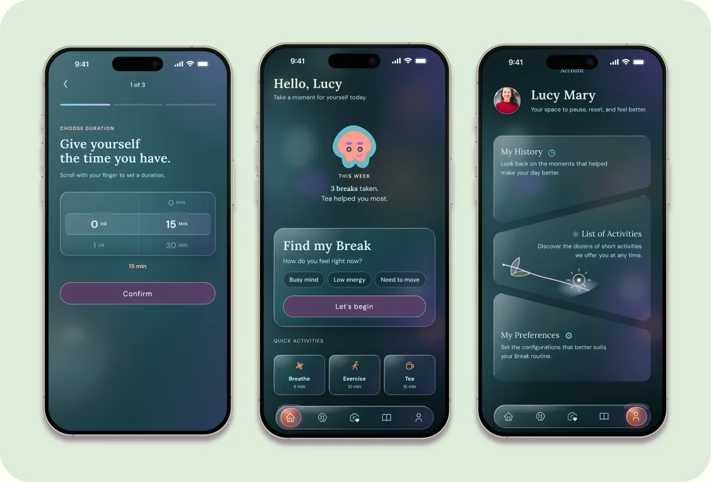

Where is My Break?
- Problem
- 88% of target users feel mentally or physically depleted several times a week, and generic wellness advice becomes one more task on the list.
- My role
- Designer in a team of three, on a bootcamp capstone project.
- Methods
- Competitor analysis, interviews, surveys, persona, user journey, information architecture, wireframes, brand identity, clickable prototype.
- Result
- A mobile app prototype that turns unplanned gaps in the day into short personalized Resets and keeps a history of what helped.